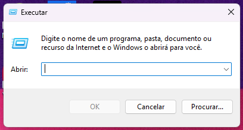

Olá, este manual foi feito para auxiliar os professores, no mapeamento das impressoras nos computadores das salas dos professores.
Passo 1: Encontrar a impressora
A - Procure a impressora na rede, clicando na bandeira do Windows

e escreva "Executar"

B - Ao clicar em "Executar", na janela que abrir, digite o comando \\wvprintserver01.anima.intranet e clique em "OK"

Passo 2: Conectar à impressora
A - Após a etapa anterior, abrirá uma janela com o servidor de impressão. Indicando que a impressora foi encontrada e está disponível.

B - Nesta etapa, clique com o botão direito sobre o ícone da impressora e selecione "Conectar".

Passo 3: Selecionar a impressora para impressão
A - Aqui abrirá uma notificação de carregamento, mostrando a impressora se conectando ao usuário/computador, terminando o processo de mapeamento.

B - Para finalizar, abra um documento e o coloque para impressão selecionando a impressora na opção de destino, deve ser escolhida a opção ANIMA_IMPRESSAO_SIMPRESS em wvprintserver01.